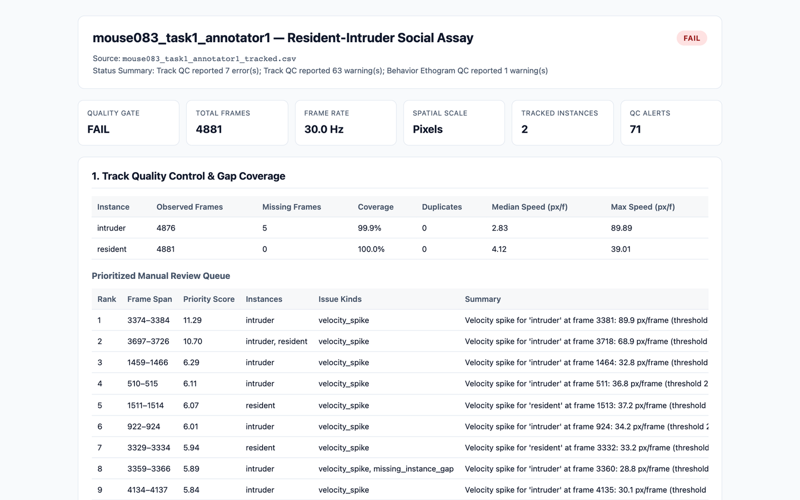

Featured Walkthrough: Resident-Intruder Social Assay (mouse083)#
This end-to-end walkthrough follows one real two-mouse home-cage recording (mouse083_task1_annotator1.mp4: 1024 × 570, 30 FPS, 4,881 frames, 162.7 s) from first GUI click to a publication-ready HTML5 + SVG report.
Animated Multi-Animal Tracking & Behavior Preview#
Fig. 15 Tethered black resident (resident, cyan contour + 7 keypoints) interacting with a white intruder (intruder, amber contour + 7 keypoints) on textured aspen bedding near a right-wall feeder port.#
1. Transparent Project Files on Disk#
Every stage stays human-readable and versionable in plain JSON and CSV files:
mouse083_task1_annotator1.mp4 # Source 30 FPS video (1024 × 570, 4,881 frames)
mouse083_task1_annotator1/
project.annolid.json # Shared ethogram schema (other, investigation, mount)
mouse083_task1_annotator1_000000000.json # Per-frame LabelMe JSON (2 polygons + 14 keypoints + flags)
...
mouse083_task1_annotator1_000004880.json
mouse083_task1_annotator1_tracking.csv # 78,091 rows: RLE masks, boxes, centroids for all 16 shapes
mouse083_task1_annotator1_tracked.csv # 9,757 rows: per-animal centroids, motion index, timestamps
Each annotated frame contains:
2 whole-animal polygons:
residentandintruder14 anatomical keypoints (7 per mouse, linked by
group_id):nose,left_ear,right_ear,neck,left_hip,right_hip,tail_baseFrame-level ethogram flags:
other,investigation, ormount
2. Labeling & Review Inside the Desktop GUI#

Fig. 16 The Annolid desktop workspace synchronizes polygons, keypoints, viewport-pinned behavior badges (• investigation), Flags, Label Instances, Video List, and Behavior Controls.#
To run this workflow on your own recording:
Open your video directly (
File → Open Video) — no frame extraction required.Seed
Frame 0000with whole-body polygons (Create AI-Polygon) and anatomical keypoints.Track polygons forward with Cutie, SAM3, or YOLO, and track keypoints with DINOv3 Keypoint Tracking.
Score behaviors (
investigation,mount,other) via Flags, the Timeline needle, or Annolid Bot 1-second segment labeling.
3. Tracking Through Close Contact & Catching Occlusions With Track QC#
Real social trials alternate between clear separation and heavy overlap where one mouse temporarily hides the other.

Fig. 17 Four key moments across the trial: (A) clean seed frame (494 px separation), (B) nose-to-body investigation (143 px), (C) high-overlap mount (114 px), and (D) a 5-frame occlusion dropout automatically caught by Track QC at frames 3361–3366.#
Run automated Track QC to rank the highest-risk frames for targeted human review instead of guessing where errors occurred:
annolid-run track-qc mouse083_task1_annotator1_tracked.csv \
--expected-instances 2 \
--fps 30 \
--review-csv mouse083_review_queue.csv \
--out mouse083_track_qc.json
Double-clicking row #1 in Analysis → Analysis & Reporting Studio… → Track QC & Gaps jumps your canvas straight to frame 3361 so you can repair one anchor frame and re-propagate cleanly.
4. Ethogram Timeline, Social Proximity & Arena Trajectories#

Fig. 18 Scored ethogram bouts align tightly with sharp drops in inter-animal distance (< 100 px close-contact threshold), while full-session trajectories reveal clear wall-following thigmotaxis.#
Metric |
|
|
|---|---|---|
Observed Frames (Coverage) |
4,881 / 4,881 ( |
4,876 / 4,881 ( |
Path Distance |
|
|
Mean Speed |
|
|
Freezing % (Bouts) |
|
|
Inter-Animal Distance |
Mean |
Close contact ( |
Behavior time budget across the 162.7 s recording:
Behavior |
Bouts |
Total Duration |
Mean Bout |
Median Bout |
% of Session |
|---|---|---|---|---|---|
|
24 |
|
|
|
|
|
25 |
|
|
|
|
|
7 |
|
|
|
|
5. Spatial Zone & Place-Preference Scoring#
Define reusable arena zones once in Video Tools → Zones (mouse083_zones.json) and score occupancy and entries in one command:
annolid-run zone-analysis mouse083_task1_annotator1_tracked.csv \
--zone-file mouse083_zones.json \
--fps 30 \
--mode zone_metrics \
--output-dir ./mouse083_zone_out

Fig. 19 Spatial zone polygons (left_nest_zone, center_arena, right_port_zone) overlaid with tracked centroids and computed occupancy durations and entry counts.#
Both animals spend over 78% of the trial in the two end zones (left_nest_zone and right_port_zone) and transit quickly across center_arena (1.10–1.59 s mean visit).
6. One-Command Unified HTML5 + Inline SVG Report#
Combine Track QC, kinematics, spatial zones, body-part contact ethograms, and behavior time budgets into one shareable, offline HTML5 report:
annolid-run report mouse083_task1_annotator1_tracked.csv \
--events-csv mouse083_events.csv \
--zone-file mouse083_zones.json \
--schema mouse083_task1_annotator1/project.annolid.json \
--fps 30 \
--title "mouse083_task1_annotator1 — Resident-Intruder Social Assay" \
--output-dir ./mouse083_report


Fig. 20 Preview of the generated self-contained HTML5/SVG report (open the live interactive report).#
7. Pair Real Recordings With 3D Digital Twins#
Want synthetic ground-truth pose, body-part masks, or controlled occlusion tests modeled on the same black C57BL/6 + white BALB/c paradigm? Continue to 3D Digital Animal Twins & Sim-to-Real Studio.